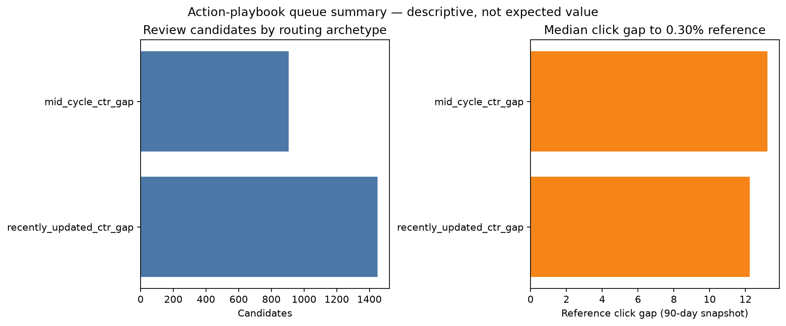

Start with the transparent Page-1/low-CTR queue
Use the 2,354 eligible items as a capacity-limited inspection list. Each candidate needs a reviewer to examine live intent, title/snippet context, freshness, and evidence before any action.
A reproducible decision-support study
A client-held-out comparison of an interpretable Page-1/low-CTR rule and a regularized logistic model, framed carefully as observed-snapshot evidence rather than a forecast or causal claim.
Title + abstract
This FlyRank content-review case study asks whether a learned ranker can prioritize existing content items for observed decline review better than an interpretable Page-1/low-CTR rule.
It uses the FlyRank ML Internship starter release: 30,000 pseudonymized content-item snapshots across 32 pseudonymized clients with trailing-90-day search and content measurements.
A regularized logistic model and the unchanged rule were evaluated on the same fixed holdout of eight unseen clients.
At 50 reviewed items, the model identified 41 observed declines (Precision@50 = 0.82) versus 25 for the rule (0.50), against a 0.518 holdout base rate.
The result supports FlyRank's review-first content workflow—inspect intent, snippet context, and freshness before choosing an action—but it neither forecasts future decline nor establishes that changing a page will improve search performance.
Introduction / problem statement
FlyRank's content problem is practical: a content specialist can face more existing pages to inspect than there is editorial time to investigate them. This case study turns observed organic-search signals into a transparent review queue, while keeping the human—not a score—in charge of diagnosing intent, snippet context, freshness, and the appropriate next step.
The decision supported here is narrow: which existing content items should a FlyRank content specialist inspect first for an observed decline or a Page-1/low-CTR gap? A wrong prioritization wastes review time or delays an item that deserves investigation; it does not diagnose the cause, justify an automatic edit, or promise a ranking improvement.
Data
The reported analysis uses the bundled anonymized starter release, content_refresh_anonymized.csv. Its grain is one pseudonymized content item for one pseudonymized client, summarized over a trailing 90-day snapshot; the export supplies no public calendar endpoints, so none are inferred here.
| Scope | Table or release | Use in this paper |
|---|---|---|
| Reported evidence | Bundled anonymized starter release, 30,000 × 44 snapshot | All metrics, charts, and recommendations on this page. |
| Warehouse context only | FlyRank warehouse build v20260703: fact_content_daily_performance, 78,835,655 daily rows, 27 Jan 2025–30 Jun 2026 | Not queried or used in reported calculations; documented as the future reproducibility path. |
No client names, domains, page titles, URLs, keywords, raw queries, or row-level records are published. Pseudonymous client_id and content_id are used only to hold out whole client groups and are never model features.
The observed decline label is derived from trend_direction; that field, trend_pct, the label itself, and direct last-30-day/previous-30-day components are excluded from the model inputs. The validation audit also excludes all trailing-90-day performance aggregates that overlap the label window.
Methodology
The target is the observed down trend direction, which compares recent and preceding 30-day windows inside the snapshot. It is an observed label for ranking a review list—not a future outcome, proof of causality, or a representation of a search engine’s ranking algorithm.
The primary learned benchmark is L2-regularized logistic regression. Numeric inputs are median-imputed using training data, standardized using training statistics, and paired with missingness flags; categorical inputs are one-hot encoded from training categories only.
The unchanged baseline selects items with at least 3,000 trailing-90-day impressions, average position 4–10, and CTR at or below 0.30%. It ranks eligible items by the gap to the 0.30% reference, a sorting aid rather than a click forecast.
A fixed seed (42) holds out eight of 32 whole pseudonymized clients. Both approaches rank exactly the held-out rows; no client appears in both partitions. Precision@50 and Precision@100 are presented with the held-out base rate and lift, alongside average precision and ROC AUC.
The primary benchmark includes observable metadata, content attributes, 90-day aggregates, rates, and derived tiers. It explicitly excludes identities, label sources, 30-day label components, and provider/model fields. Because the 90-day aggregates still overlap the label’s two 30-day windows, a stricter second analysis removes them all.
The final audited feature frame retains only static metadata: search volume, competition, cost per click, word count, character count, competition level, content type, and main intent. A controlled probe that adds trend_direction reaches average precision 1.000; removing it and all overlap fields reduces the audited model to average precision 0.619. That contrast is treated as a warning about leakage risk, not as an achievement.
Results
On the fixed holdout of 14,752 rows from eight unseen clients, the observed decline base rate is 0.518. The learned model finds 16 more observed declines than the transparent rule in the first 50 items, but this primary result remains vulnerable to the overlapping-window concern described above.
| Approach | P@50 | Lift@50 | P@100 | Lift@100 | Average precision | ROC AUC |
|---|---|---|---|---|---|---|
| Transparent CTR-opportunity rule | 0.50 (25 / 50) | 0.965× | 0.43 (43 / 100) | 0.830× | 0.526 | 0.509 |
| Regularized logistic regression | 0.82 (41 / 50) | 1.583× | 0.78 (78 / 100) | 1.506× | 0.645 | 0.658 |

With only metadata that does not span either label window, the unseen-client model reaches Precision@50 = 0.68 (lift 1.365×), average precision = 0.619, and ROC AUC = 0.662. This remains association within one snapshot, but it is the more conservative result to carry into any next study.
Limitations & honest framing
Ranked recommendations
Use the 2,354 eligible items as a capacity-limited inspection list. Each candidate needs a reviewer to examine live intent, title/snippet context, freshness, and evidence before any action.
The larger archetype contains 1,449 recently updated candidates. Treat recent updates as a reason to investigate intent or SERP presentation first, not as a reason to reflexively edit again.
The primary benchmark improves observed-label concentration, but overlapping-window risk means it should not replace the transparent rule or become an automated decision. Preserve the baseline as a comparator.
Build a warehouse feature set with as-of timestamps, then evaluate on later outcomes using time-aware and client-aware holdouts. Measure reviewer acceptance and controlled post-change outcomes separately from model metrics.
Reproducibility
All reported starter-slice work uses seed 42. The repository contains the data-use rules, notebook outputs, public-safe chart, and the capstone notebook that mirrors this page.
git clone https://github.com/avi-dot-ai/FL-W.git
cd FL-W
python -m pip install -r requirements.txt
jupyter nbconvert --to notebook --execute --inplace work/notebooks/w04_baseline_score.ipynb
jupyter nbconvert --to notebook --execute --inplace work/notebooks/w05_model.ipynb
jupyter nbconvert --to notebook --execute --inplace work/notebooks/w06_validation_audit.ipynb
jupyter nbconvert --to notebook --execute --inplace work/notebooks/w07_action_playbook.ipynb
jupyter nbconvert --to notebook --execute --inplace work/notebooks/capstone.ipynbAcknowledgments & data credit
Built on the FlyRank ML Internship dataset. Thanks to FlyRank for providing the public-safe, pseudonymized internship release and to the internship curriculum for its emphasis on data minimization, leakage checks, grouped validation, and honest decision-support framing.